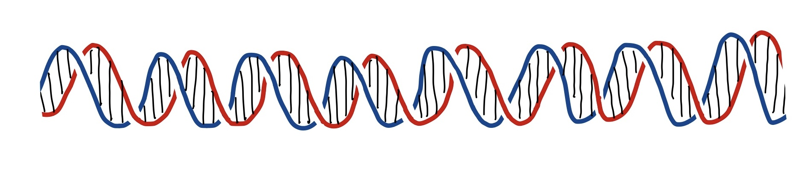
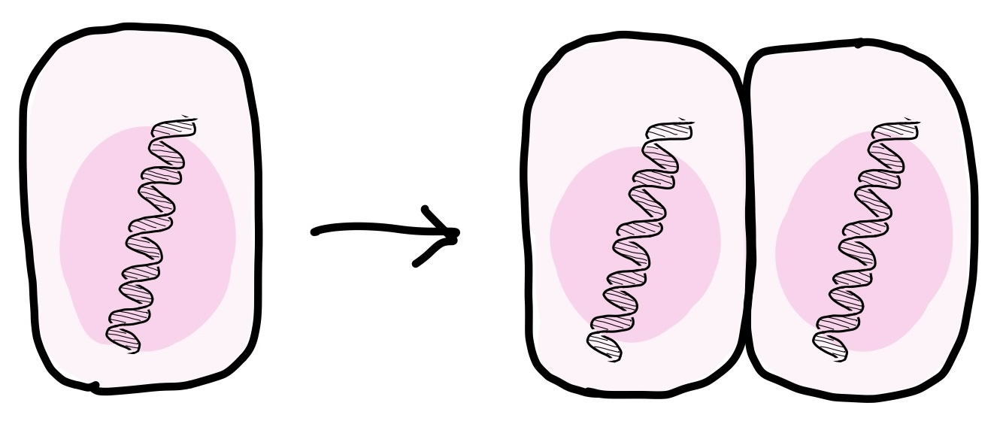
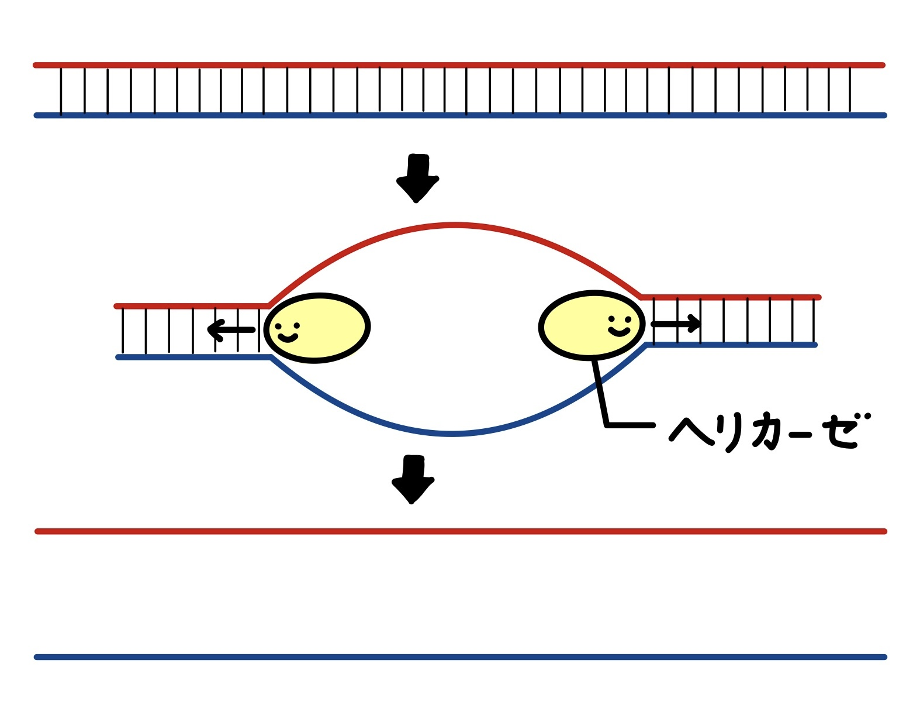
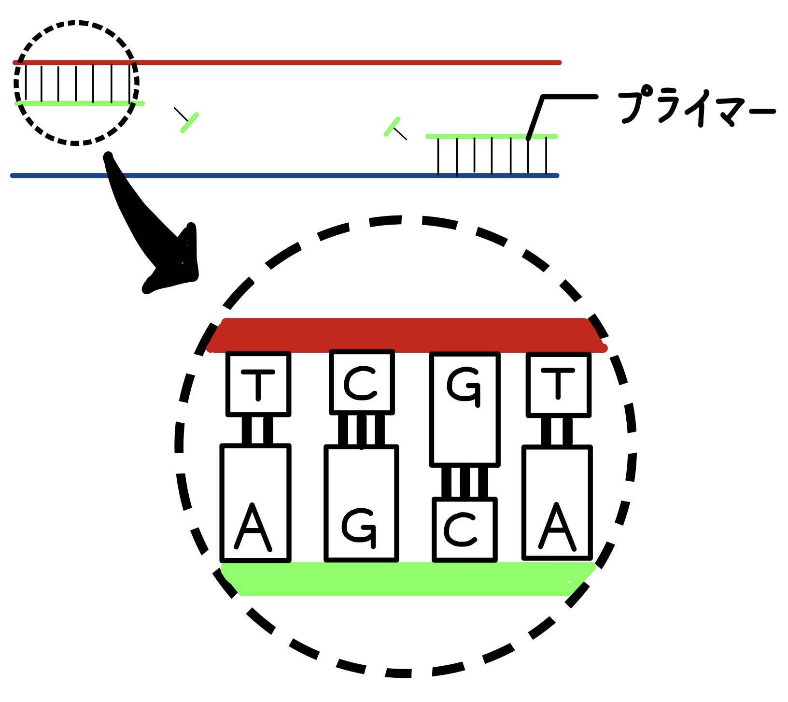
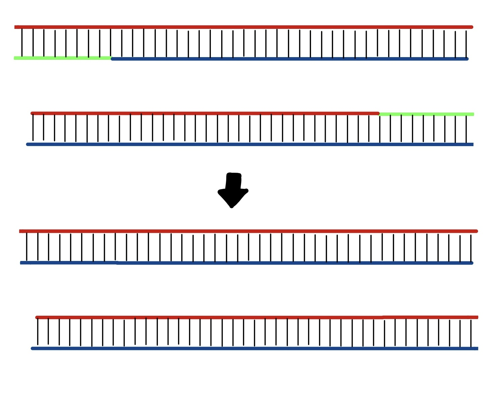
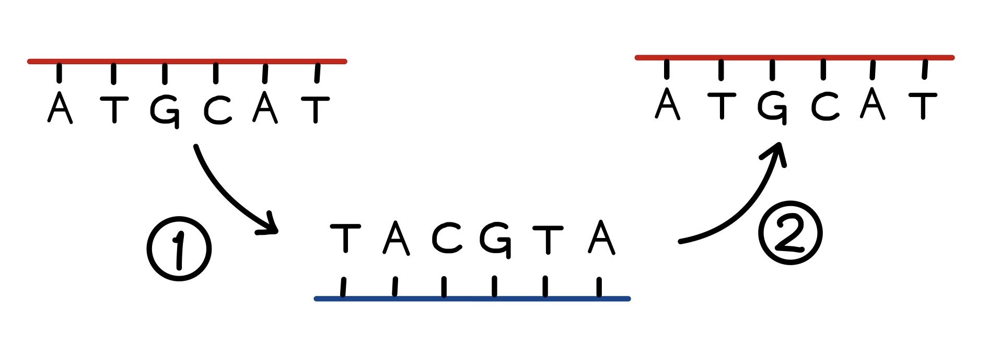
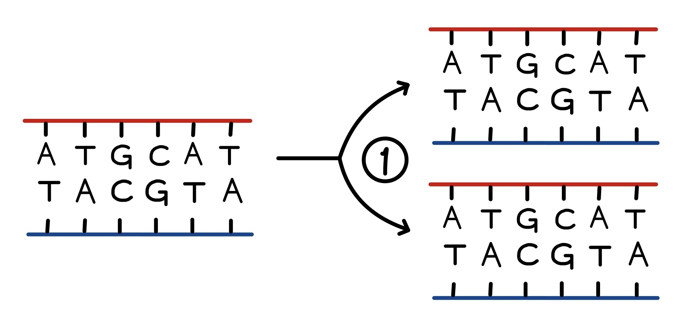

１本のDNAには、A・T・G・Cの４種類の塩基（パーツ）が並んでいます。 AとT、GとCはそれぞれ結合するため、パーツの順番が対応する「相方」の鎖があれば、２本鎖になることができます。 通常、DNAはこのような２本鎖の形で存在しています。
では、なぜわざわざ２本鎖になるのでしょうか？１本鎖よりも優れている点があるのでしょうか？ 実は、DNAを「複製」するときに２本鎖であることがとても役立つのです。 まずはDNAの複製について見てみましょう。
私たちは皆、たった１つの細胞から始まりました。 １つの細胞が分裂して２つになり、４、８、１６、...と数をどんどん増やした結果、今の私たちになったのです。 （ヒトの体は約37~60兆個の細胞からできていると言われています。）
DNAは細胞１つ１つの中に保管されているため、細胞が分裂するときにコピーを作る必要があります。 これがDNAの「複製」です。
DNAの複製は①２本鎖の開裂、②プライマーの結合、③DNAポリメラーゼによる鎖の伸長④RNAプライマーのDNAへの置換の４つのステップに分かれています。
ヘリカーゼという酵素（化学反応を助けるタンパク質）はAとT、GとCの間の結合を切ることができます。 この働きによって、２本鎖DNAが１本鎖DNAに開裂します。
この時点で１本鎖DNAが２本できています。 それぞれの「相方」の鎖を作っていきたいのですが、そのためにはまず、プライマーと呼ばれる「足場」を作る必要があります。 プライマーはRNAという物質でできています。 RNAはDNAとよく似た構造をもつため、DNAと結合することができます（DNA同士の結合のしくみと非常に似ています）。
いよいよ、「相方」の鎖を作ることになります。 この働きを担うのはDNAポリメラーゼと呼ばれる酵素です。 DNAポリメラーゼはプライマー（足場）に結合すると、DNA鎖を移動しながら「相方」の鎖を作っていきます。 １本鎖の塩基配列（A・T・G・Cの順番）を読み取り、それと対応する順番になるように新しいDNA鎖を合成します。 例えば「ACGCT」という配列を読み取ると「TGCGA」の順番に塩基を結合させるのです。

これでDNA複製はほぼ完了です。 しかし、複製がはじまった場所にはRNAプライマーが結合していましたね。 最後に、プライマー部分がDNAに置き換わることで鎖の全部分を複製することができます。
以上がDNA複製の仕組みです。
さて、DNA複製の仕組みを見てきましたが、なぜ２本鎖であることが複製に役立つのでしょうか？
もしもDNAが１本鎖で存在していた場合、もとの鎖と同一配列の鎖を作るには、２回複製をする必要があります。
DNAが２本鎖であるからこそ、複製の手間を減らすことができるのです。
その他にも、片方の鎖が傷ついた時に相方の鎖を鋳型として修復できるという利点もあります。 DNAは生命の設計書なので、情報が変わったり失われたりしないように保存する仕組みが重要なのです。